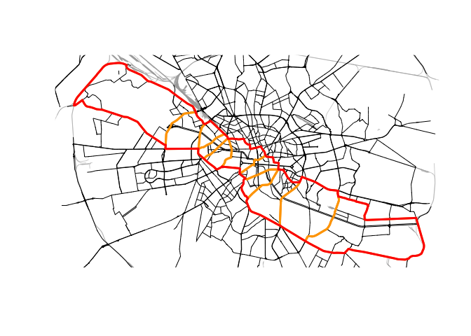

rcrisp provides tools to automate the morphological delineation of riverside urban areas following the CRiSp (City River Spaces) method.
Installation
You can install the released version of rcrisp from CRAN with:
install.packages("rcrisp")You can install the development version of rcrisp from GitHub with:
# install.packages("pak")
pak::pak("CityRiverSpaces/rcrisp")Example
This is a basic example which shows you how to solve a common problem:
library(rcrisp)
# Set location parameters
city_name <- "Bucharest"
river_name <- "Dâmbovița"
epsg_code <- 32635
# Get base layer for plotting
bb <- get_osm_bb(city_name)
streets <- get_osm_streets(bb, epsg_code)$geometry
railways <- get_osm_railways(bb, epsg_code)$geometry
# Delineate river corridor
bd <- delineate(city_name, river_name, segments = TRUE)
corridor <- bd$corridor
segments <- bd$segments
# Plot results
plot(corridor)
plot(railways, col = "darkgrey", add = TRUE, lwd = 0.5)
plot(streets, add = TRUE)
plot(segments, border = "orange", add = TRUE, lwd = 3)
plot(corridor, border = "red", add = TRUE, lwd = 3)
Contributing
We look very much forward to contributions to the package. See the Contributing Guide for further details.
This package is released with a Contributor Code of Conduct. By contributing to this project you agree to abide by its terms.